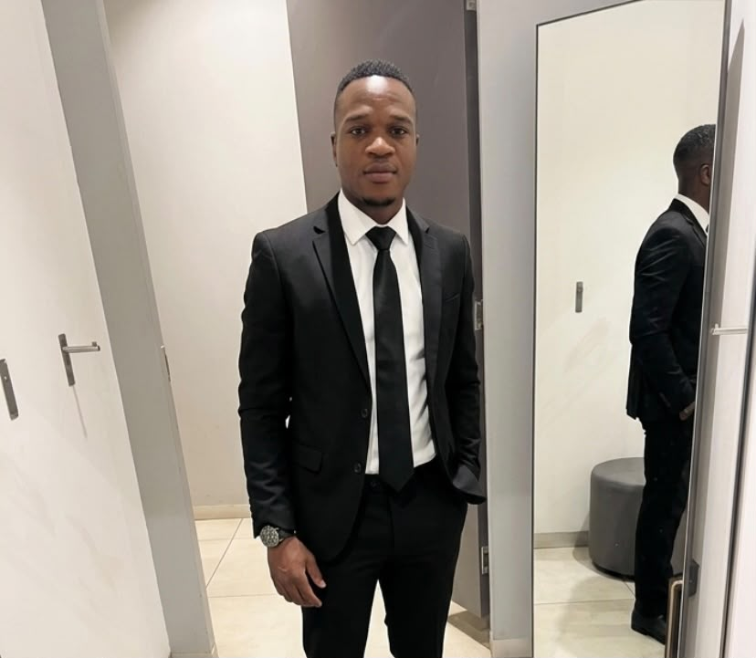

Meet Your Future Astronomy Teacher

Inspiring Young Minds to Explore the Universe I am a passionate future teacher with an interest in Astronomy and Science education. My goal is to make Astronomy simple, interesting and enjoyable for school learners. Astronomy gives learners the opportunity to explore the world beyond Earth and develop an understanding of the Solar System, stars, galaxies and the Universe. As a future teacher, I want to create lessons that encourage learners to ask questions, think critically and develop curiosity about the world around them. I believe that learning should be engaging and interactive. I aim to use explanations, discussions, visual materials and practical activities to help learners understand Astronomy concepts and connect what they learn in the classroom to the real world. My Teaching Goals 🔭 Make Astronomy Easy to Understand I want to explain Astronomy concepts in a simple way that learners can understand and remember. 🌌 Encourage Curiosity I want learners to ask questions and become curious about the Universe. 🧠 Develop Critical Thinking Astronomy can encourage learners to observe, investigate, ask questions and think scientifically. 🌍 Connect Learning to the Real World I want learners to understand how Astronomy connects with Earth, Science, Geography and everyday life. My Vision My vision is to inspire learners to look beyond the classroom and discover the wonders of the Universe. I want my Astronomy lessons to create an environment where learners feel encouraged to explore, question and learn.